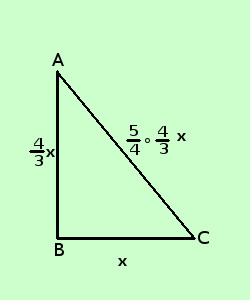

|
sviluppo Risolvere il seguente problema Calcolare le misure dei lati di un triangolo sapendo che il perimetro e' 240 cm, il secondo lato e' i 4/3 del primo ed il terzo e' i 5/4 del secondo ipotesi: il perimetro e' 240 cm il secondo lato e' i 4/3 del primo il terzo e' i 5/4 del secondo tesi: calcolare i tre lati  chiamo x la misura del primo lato Misura primo lato = BC = x
Perimetro = 240 cm BC + AB + AC = 240 sostituisco ai lati i loro valori in x
minimo comune multiplo
applico il secondo principio per eliminare i denominatori (moltiplico per 3) 3x + 4x + 5x = 720 sommo i termini simili 12x = 720 applico il secondo principio per trovare la x
x = 60 Misura primo lato = BC = x = 60 cm
Nota: il triangolo e' rettangolo: infatti se applico il teorema di Pitagora ho 602+802= 1002 Si poteva intuirlo facendo la figura con le giuste proporzioni, oppure osservando che le misure dei lati sono proporzionali ai numeri 3,4 e 5 (terna pitagorica) Quando assegnavo un compito in classe a chi riusciva a capire autonomamente di che tipo di triangolo si trattava e lo dimostrava autonomamente senza che io lo richiedessi davo una valutazione superiore |